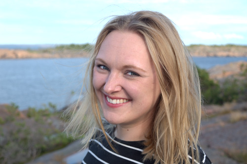

Tabatha Leggett
About
Tabatha is a fiction writer and translator. She is currently working on a short story collection that explores how we convey meaning despite the constraints of language. Also currently, she is translating Riikka Pulkkinen's novel Lumo (Otava, 2022) from the Finnish, forthcoming with Scribe in 2025, and Melanie Orenius and Laura Porola's comic book Breathe illustrated by Ulla Donner, which will be published by Amos Rex and the Finnish Literature Society (SKS) in 2024.
Tabatha is a first year MFA student in Creative Writing (Fiction) at New York University, where she is an Axinn Fellow and Translation Editor for Washington Square Review. She has a Master's degree in Philosophy from Birkbeck, University of London where she studied radical feminism and the emergence of consciousness-raising groups. She contributed a chapter on this topic to the anthology Philosophy for Girls: An Invitation to the Life of Thought, eds. M. Shew & K. Garchar (Oxford University Press, 2020). She also has a Bachelor's degree in Philosophy from Cambridge University, where she studied the aesthetic status and value of pornography.
Originally from North Wales, Tabatha lived in London and Helsinki before moving to Brooklyn last year.
Contact
First name dot last name at gmail dot com